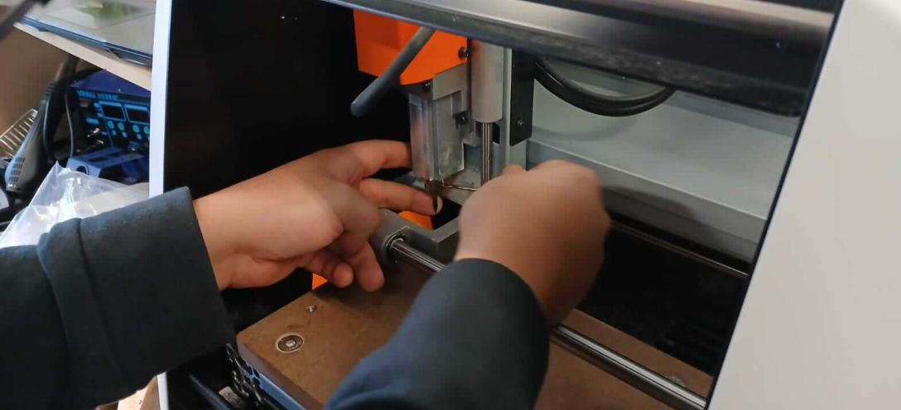

MonoFab SRM-20
Fresadora de precisión de sobremesa que fabrica prototipos y PCBs directamente desde un diseño digital.
Volver al Inicio
Fresadora de precisión de sobremesa que fabrica prototipos y PCBs directamente desde un diseño digital.
Volver al Inicio
La MonoFab SRM-20 es una fresadora de sobremesa de precisión utilizada principalmente para prototipado rápido y producción electrónica, permitiendo fabricar placas de circuitos impresos (PCB) de manera rápida y accesible directamente desde un diseño digital.
Resolución de 0.0001 mm para trabajos de fresado detallados.
Mesa de trabajo de 203.2 mm (X) x 152.4 mm (Y) x 60.5 mm (Z).
Interfaz intuitiva y software amigable para usuarios de todos los niveles.
Capaz de fresar PCB, modelado en cera, plásticos y maderas blandas.
Tamaño reducido ideal para espacios limitados como laboratorios o aulas.
Fácil conexión con computadoras para control y transferencia de archivos.
| Característica | Especificación |
|---|---|
| Área de trabajo (X, Y, Z) | 203.2 mm × 152.4 mm × 60.5 mm |
| Velocidad del husillo | 3,000 - 7,000 rpm |
| Resolución de avance | 0.0001 mm/paso |
| Velocidad de avance | 1 - 1,800 mm/minuto |
| Interface | USB |
| Dimensiones (W×D×H) | 431 mm × 426.5 mm × 426.1 mm |
| Peso | 19.5 kg |
Basado en la información del PDF proporcionado, el proceso de fresado sigue estos pasos:
Colocar la placa sobre la cama de sacrificio utilizando cinta doble cara. Atornillar lo suficiente, evitando pandear la cama.

Seleccionar las herramientas adecuadas según el tipo de operación a realizar.
El orden correcto de los cortes es fundamental para un buen resultado:
Con cada paso, es necesario cambiar la herramienta de corte.
El manejo de la máquina se realiza a través del software de control VPanel. Desde esta interfaz, el usuario:
La interfaz VPanel muestra información importante como:
Para obtener más información sobre el uso de la MonoFab SRM-20, consulta los siguientes recursos: